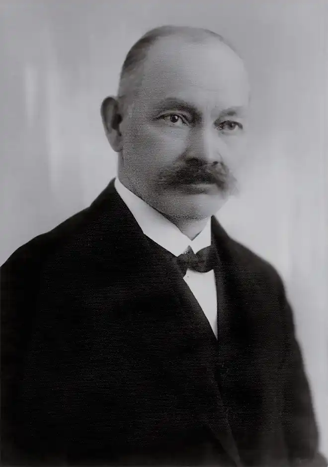

Народився 24 серпня 1871 село Вислобоки на Львівщині. Студії зі слов'янської філології завершив у 1895 році у Львівському і Віденському (докторат у Ватрослава Яґіча) університетах, педагогічний іспит склав у Чернівецькому університеті в 1898 році.
У літературу, науку, громадянське і публіцистичне життя Львова і Відня Щурата впровадив Іван Франко, під впливом якого він залишився до 1896. Щурат виступав в австрійській, польській, чеській і західноукраїнській пресі зі статтями, поетичними перекладами та ориґінальними віршами, був співредактором газети "Буковина" в Чернівцях, редактором журналу "Молода Муза" (1906), "Сьвіт" і тижневика "Неділя" (1912). З політичних міркувань виступав на стороні "Діла".
У 1898—1934 учителював у державних гімназіях Перемишля, Бродів, Львова (з 1907). 1921-го не присягнув на вірність польській державі й став директором приватної жіночої гімназії сестер Василіянок у Львові (1921—1934). 1914 В. Щурат був обраний дійсним членом НТШ, а з 1915 по 1923 був його головою; брав активну участь у боротьбі за Український університет, а після неуспіху став ініціатором і першим ректором Львівського таємного університету (1921—1923). У 1930, у зв'язку з процесом СВУ і дальшими репресіями в Україні, зрікся гідности дійсного члена ВУАН, якою його наділено у червні 1929 разом з М. С. Возняком та Ф. М. Колессою за спеціальністю "мова та література" (відновлений дійсний член УАН після большевицької окупації Галичини у 1939). Останні роки життя працював директором Львівської бібліотеки АН УРСР і професором Львівського Університету. Франко Іван склав поетичну відповідь — вірш "Декадент" — на закиди В. Щурата. Помер 24 квітня 1948 у Львові. Похований на Личаківському цвинтарі.